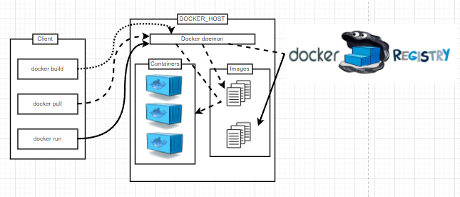

Docker
Intro
The traditional virtual machine we use, it has some limited, such as it requires simulating the entire machine including hardware, each virtual machine needs to have its own operating system, and every virtual machine should choose the same operating system in the same project, otherwise it would not able to link together. Once the virtual machine is started, all the resources pre-allocated to it will be occupied.
However, the docker could run directly on the host kernel and does not need to start a full operating system, the startup speed is on the order of seconds, while virtual machines usually take minutes to start.
Docker utilizes system resources more efficiently because containers do not require the additional overhead of hardware virtualization and running a full operating system.
Docker's architecture can share a single kernel and shared application library, occupying very little memory. In the same hardware environment, the number of images run by Docker is much more than the number of virtual machines, and the utilization of the system is very high.
Developers can use Dockerfile to build images and perform integration tests, while operators can quickly deploy the image directly in the production environment, or even automate deployment.
Migrating applications is easier because Docker ensures consistency of the execution environment. Docker can run on many platforms, whether it is a physical machine, a virtual machine, a public cloud, a private cloud, or even a laptop, and its running results are consistent. Therefore, users can easily migrate an application running on one platform to another platform without worrying about the situation that the application cannot run normally due to changes in the running environment.
Download and install Docker
Docker for Windows
Dicker for Mac with Intel chip
Docker for Mac with Apple chip
Docker for Linux


Docker Workflow

Image: A Docker image is a special file system. In addition to providing the programs, libraries, resources, configuration and other files required for the container to run, it also contains some configuration parameters prepared for the runtime (such as anonymous volumes, environment variables, users, etc.). The image does not contain any dynamic data, and its contents are not changed after construction.
Container: The relationship between Image and Container is like class and instance in object-oriented programming. Image is a static definition, and container is the entity of image runtime. Containers can be created, started, stopped, deleted, suspended, etc.
Repository: Repository is a Git-like remote repository that centrally stores image files.
SETUP
Configuring user information used across all local repositories
docker run -d -p 80:80 docker/getting-started
-d
- run the container in detached mode (in the background)
-p 80:80
- map port 80 of the host to port 80 in the container
docker/getting-started
- the image to use
docker build -t getting-started
used the Dockerfile to build a new container image
docker run -dp 3000:3000 getting-started
see the website on http://localhost:3000
Remove a container using the CLI
To remove a container, it first needs to be stopped. Once it has stopped, it can be removed.
docker ps
Get the ID of the container
docker stop [the-container-id]
stop the container
docker rm [the-container-id]
Once the container has stopped, you can remove it
Get the ID of the container
docker stop [the-container-id]
stop the container
docker rm [the-container-id]
Once the container has stopped, you can remove it